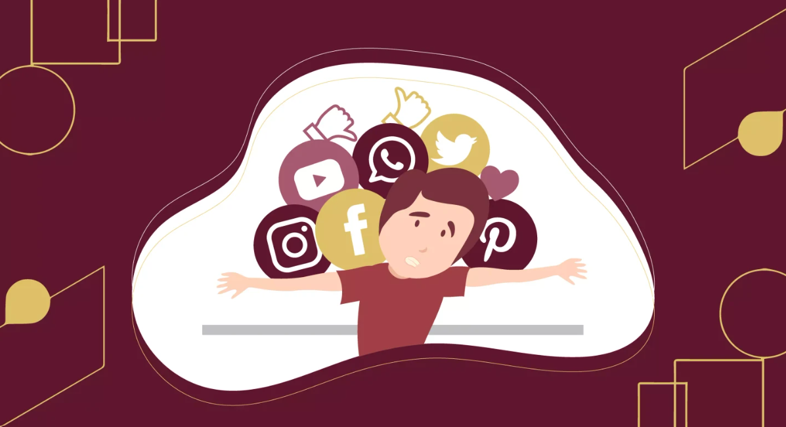
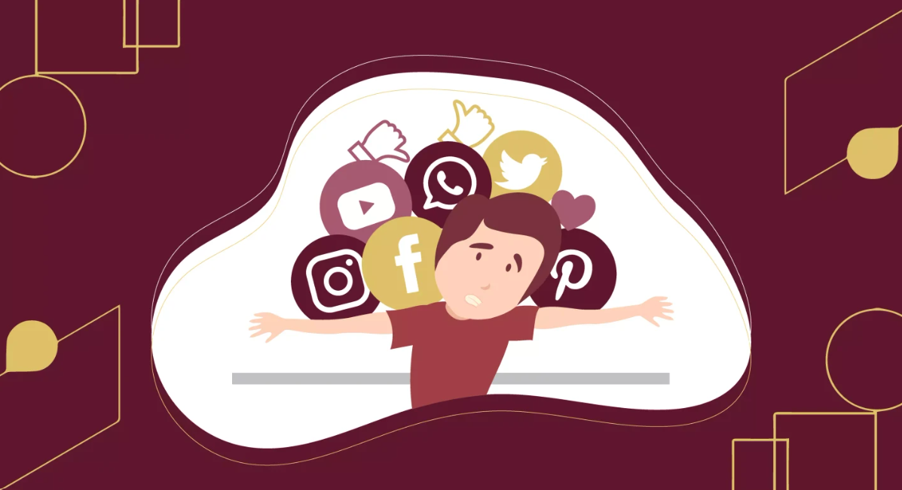

SOCIAL MEDIA CAN HAVE NEGATIVE EFFECTS ON THE MENTAL HEALTH OF TEENAGERS:
These effects include:
• Increased exposure to harm, social isolation, depression, anxiety and cyber-bullying.
• Exacerbated anxiety and stress.
• Imposter Syndrome, a disconnect between who you appear to be online and who you think you are in real life.
• Pressure to drink alcohol and use drugs after seeing their friends post about these activities online.
• Feelings of social anxiety.Symptoms of virtual peer pressure like depression, loss of appetite, social withdrawal, rude behavior, etc.
SIGNS THAT SOCIAL MEDIA IS IMPACTING YOUR MENTAL HEALTH:
• Spending more time on social media than with real world friends. Using social media has become a substitute for a lot of your offline social interaction. Even if you’re out with friends, you still feel the need to constantly check social media, often driven by feelings that others may be having more fun than you.
• Comparing yourself unfavorably with others on social media. You have low self-esteem or negative body image. You may even have patterns of disordered eating.
• Experiencing cyberbullying. Or you worry that you have no control over the things people post about you.
• Being distracted at school or work. You feel pressure to post regular content about yourself, get comments or likes on your posts, or respond quickly and enthusiastically to friends’ posts.
• Having no time for self-reflection. Every spare moment is filled by engaging with social media, leaving you little or no time for reflecting on who you are, what you think, or why you act the way that you do—the things that allow you to grow as a person.
• Engaging in risky behavior in order to gain likes, shares, or positive reactions on social media. You play dangerous pranks, post embarrassing material, cyberbully others, or access your phone while driving or in other unsafe situations.
• Suffering from sleep problems. Do you check social media last thing at night, first thing in the morning, or even when you wake up in the night? The light from phones and other devices can disrupt your sleep, which in turn can have a serious impact on your mental health.
• Worsening symptoms of anxiety or depression. Rather than helping to alleviate negative feelings and boost your mood, you feel more anxious, depressed, or lonely after using social media.
PREVENTION:
• Reduce your time online and take breaks from social media.
• Change your focus from comparing yourself to others to pursuing your own interests and goals.
• Spend more time with offline friends and enjoy face-to-face interactions.
• Express gratitude for what you have and appreciate the positive aspects of your life.
• Practice mindfulness techniques such as yoga, running, self-awareness, and spending time in nature.